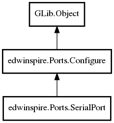

SerialPort
Object Hierarchy:

Description:
public class SerialPort :
Configure
Represents a serial port resource.
Namespace: edwinspire.Ports
Package: libspire_serial
Content:
Properties:
Static methods:
- public static
string text_as_unicode (string text)
- public static void LogCommandAT (
string text = "")
Write log from modem
- public static
string Strip (string String)
Strip string
Creation methods:
Methods:
- public
bool DiscardBuffer ()
Discards data from buffer
- public
string[] Get_PortName ()
Warning: do not use this method, not yet implemented.
- public
bool Time (uint Time_)
Maximum time in milliseconds between consecutive characters
- public
bool Open ()
Open port
- public
long Write (string data_)
Writes the data to the port
- public
char ReadChar ()
Read char from port
- public
double BaudRateTouseg ()
Returns the microseconds Baudrate turned into
- public
double BaudRateTomseg ()
Returns the milliseconds Baudrate turned into
- public
string? ReadLine (double timeout_ms_for_line = 0)
Read data port until find \r\n (not included)
- public
string? ReadLineWithoutStrip (double timeout_ms_for_line = 0)
Read data port until find \r\n.
- public
bool Close ()
Close port
Signals: